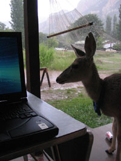

Pritchard VL, Mäkinen H, Vähä JP, Erkinaro J, Orell P, Primmer CR (2018) Genomic signatures of fine-scale local selection in Atlantic salmon suggest involvement of sexual maturation, energy homeostasis, and immune defence related genes. Molecular Ecology, 27, 2560-2575. [pdf] [dryad]
Pritchard VL, Viitaniemi HM, McCairns RJS, Merilä J, Nikinmaa M, Primmer CR, Leder EH (2017) Regulatory architecture of gene expression variation in the threespine stickleback, Gasterosteus aculeatus. G3 Genes, Genomes, Genetics, 7, 165-178. [link] [rads] [microarray] [sample ids]
Aykanat T, Lindqvist M, Pritchard VL, Primmer CR (2016) From population genomics to conservation and management: a workflow for targeted analysis of markers identified using genome-wide approaches in Atlantic salmon. Journal of Fish Biology, 89, 2658-2679. [pdf] [dryad]
Pritchard VL, Orell P, Kent MP, Lien S, Niemelä E, Erkinaro J, Primmer CR (2016) SNPs to discriminate different classes of hybrid between wild salmon and aquaculture escapees. Evolutionary Applications, 9, 1017-1031. [link] [dryad]
Hwang A, Pritchard VL, Edmands S (2016) Recovery from hybrid breakdown in a marine invertebrate is stronger and more repeatable under environmental stress. Journal of Evolutionary Biology, 29, 1793-1803. [pdf]
Papakostas S, Michaloudi E, Proios K, Brehm M, Verhage L, Rota J, Peña C, Stamou G, Pritchard VL, Fontaneto D, Declerck SAJ (2016) Integrative taxonomy recognizes evolutionary units despite widespread mitonuclear discordance: evidence from a rotifer cryptic species complex. Systematic Biology, 65, 508-524.
Pritchard VL, Garza JC, Peacock MM (2015) SNPs reveal previously undocumented non-native introgression within threatened trout populations.Conservation Genetics,16, 1001-1006. [pdf]
Johnston SE, Orell P, Pritchard VL, Kent MP, Lien S, Niemelä E, Erkinaro J, Primmer CR (2014) Genome-wide SNP analysis reveals a genetic basis for sea-age variation in a wild population of Atlantic salmon (Salmo salar). Molecular Ecology, 23, 3452-3468.
Ostberg CO, Hauser L, Pritchard VL, Garza JC, Naish KA (2013) Chromosome rearrangements, recombination suppression, and limited segregation distortion in hybrids between Yellowstone cutthroat trout (Oncorhynchus clarkii bouvieri) and rainbow trout (O. mykiss). BMC Genomics, 14, 570.
Pritchard VL, Garza JC (2013) Discovery and characterization of novel genetic markers for coastal cutthroat trout (Oncorhynchus clarkii clarkii). Conservation Genetic Resources, 5, 611-618. [pdf]
Pritchard VL, Campbell NR, Narum S, Peacock M, Garza JC (2013) Discovery and characterization of novel genetic markers for the management of Lahontan cutthroat trout (Oncorhynchus clarkii henshawi). Molecular Ecology Resources, 13, 276-288. [pdf] [dryad]
Pritchard VL, Edmands S (2013) The genomic trajectory of hybrid swarms: outcomes of repeated crosses between populations of Tigriopus californicus. Evolution, 67, 774-791. [pdf] [dryad]
Pritchard VL, Knutson VL, Lee M, Zieba J, Edmands S (2013) Fitness and morphological outcomes of many generations of hybridization in the copepod Tigriopus californicus. Journal of Evolutionary Biology, 26, 416-433. [pdf] [dryad]
Campbell NR. Amish SJ, Pritchard VL, McKelvey K, Young M, Schwartz M, Garza JC, Luikart G, Narum S (2012) Development and evaluation of 200 novel SNP assays for population genetic studies of westslope cutthroat trout and genetic identification of other taxa. Molecular Ecology Resources, 12, 942-949.
Pritchard VL, Abadía-Cardoso A, Garza JC (2012) Discovery and characterization of a large number of diagnostic markers to discriminate Oncorhynchus mykiss and O. clarkii. Molecular Ecology Resources, 12, 918-931. [pdf] [dryad]
Pritchard VL, Dimond L, Harrison JS, Velazquez CCS, Zieba JT, Burton RS, Edmands S (2011) Interpopulation hybridization results in widespread viability selection across the genome in Tigriopus californicus. BMC Genetics, 12, 54. [link]
Pritchard VL, Metcalf JL, Jones K, Martin AP, Cowley DE (2008) Population structure and genetic management of Rio Grande cutthroat trout (Oncorhynchus clarkii virginalis). Conservation Genetics, 10, 1209-1221. [pdf]
Metcalf JL, Pritchard VL, Silvestri SM, Jenkins JB, Wood JS, Cowley DE, Evans RP, Shiozawa DK, Martin AP (2007) Across the great divide: genetic forensics reveals misidentification of endangered cutthroat trout populations. Molecular Ecology, 16, 4445-4454.[pdf]
Pritchard VL, Jones K, Cowley DE (2007) Estimation of introgression in cutthroat trout populations using microsatellites. Conservation Genetics, 8, 1311-1329. [pdf]
Pritchard VL, Jones K, Cowley DE (2007) Genetic diversity within fragmented cutthroat trout populations. Transactions of the American Fisheries Society, 136, 606-623. [pdf]
Pritchard VL, Jones K, Metcalf JL, Martin AP, Wilkinson P, Cowley DE (2007) Characterization of tetranucleotide microsatellites for Rio Grande cutthroat trout and rainbow trout, and their cross-amplification in other cutthroat trout subspecies Molecular Ecology Notes, 7, 594-596. [pdf]
Wright D, Rimmer RB, Pritchard VL, Krause J, Butlin RK (2003) Inter and intra-population variation in shoaling and boldness in the zebrafish (Danio rerio). Naturwissenschaften, 90, 374-377.
Tregenza T, Pritchard VL, Butlin R K (2002) The origins of postmating isolation: testing hypotheses in the grasshopper Chorthippus parallelus. Population Ecology, 44, 137-144.
Pritchard VL, Lawrence J, Butlin RK, Krause J (2001) Shoal choice in the zebrafish, Danio rerio: the influence of shoal size and activity. Animal Behaviour, 62, 1085-1088. [pdf]
Krause J, Butlin RK, Peukhuri N, Pritchard VL (2000) The social organisation of fish shoals: a test of laboratory predictions for the field. Biological Reviews, 75, 477-501. [pdf]
Tregenza T, Pritchard VL, Butlin RK (2000) The origins of premating isolation: testing hypotheses in the grasshopper Chorthippus parallelus. Evolution, 54, 1687-1698.
Tregenza T, Pritchard VL, Butlin RK (2000) What drives speciation? Patterns of trait divergence between populations of the meadow grasshopper, Chorthippus parallelus. Evolution, 54, 574-585.
Tregenza T, Buckley SH, Pritchard VL, Butlin RK (2000) Inter- and intrapopulation effects of sex and age on epicuticular composition of meadow grasshopper, Chorthippus parallelus. Journal of Chemical Ecology, 26, 257-278.
Krause J, Hartmann N, Pritchard VL (1999). The influence of the nutritional state on shoal choice in zebrafish (Danio rerio). Animal Behaviour, 57, 771-775.
Pritchard VL, Cowley DE (2006) Rio Grande cutthroat trout: a technical conservation assessment. USDA Forest Service, Rocky Mountain Region. [pdf]
Pritchard VL (2001) Behaviour and Morphology of the Zebrafish, Danio rerio. University of Leeds, U.K. [pdf]